https://www.electroschematics.com/dc-module/
XL4015 Step-Down DC Module with CV/CC Control – Quick Review
Share this:
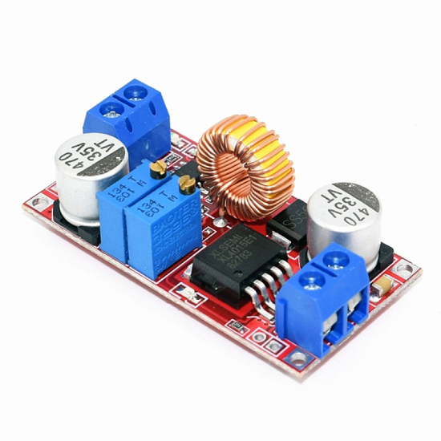
In an earlier blog post I did a teardown analysis of the XL4015 DC-DC Buck Converter module. I recently received an improved version of the same module. I purchased it from an online seller in China. I tried it immediately in a new experiment.
This time the module has onboard constant voltage (CV) and constant current (CC) control feature which is useful for general purpose power supply and battery charger applications. This is the quick specification chart of the module posted by the seller.
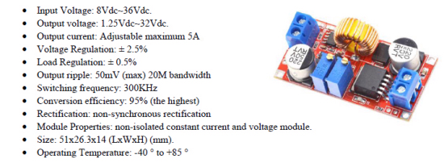
This is the photograph of my XL4015 Step-Down DC Module with CV/CC Control.
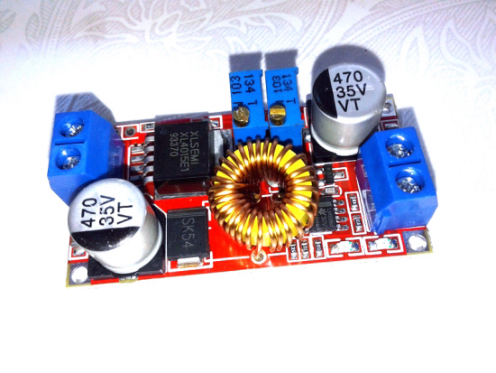
As you can see, apart from the input and output screw terminal connectors, there are two multiturn trimpots to adjust the output voltage and output current. Further, there are three LED indicators – the first one near the input connector is the constant-current (cc) indicator, while next two LEDs are intended mainly for battery charging applications (battery charging and battery full indicators). However, when used as a general-purpose power supply, the battery charging indicator LED will work as a ‘load-on’ annunciator.
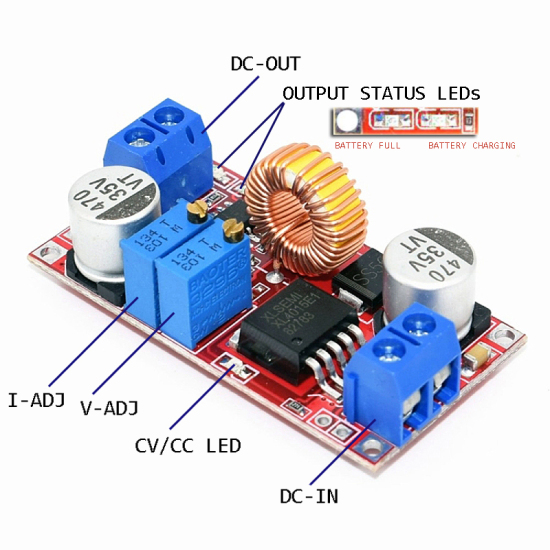
Slowly turning the voltage adjustment (V-ADJ) trimpot clockwise will raise the output voltage gradually, and a counterclockwise rotation will lower it. Likewise, clockwise turning of the current adjustment (I-ADJ) trimpot increases the current limit while counterclockwise action decreases the current limit. It’s advised to adjust the voltage level at first, and then the current level (this fine-tuning procedure will be discussed in detail later).
What follows is the thorough inspection of the module. I included this session to share information about the background electronics I think might be useful to people. Let the teardown begin!
Needless to say, at the heart of the module is a XL4015 chip from XLSEMI (www.xlsemi.com) which is a 180 KHz fixed frequency PWM step-down (buck) DC/DC converter, capable of driving a 5A load with high efficiency, low ripple and excellent line and load regulation. According to its datasheet (Rev 1.5) the PWM control circuit can adjust the duty ratio linearly from 0 to 100%. An over current protection function is built inside so that when a short circuit occurs, the operation frequency will be reduced to 48KHz. Below you can see the function block diagram of XL4015 (XL4015E1).
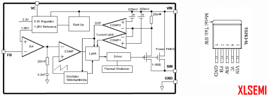
The core of the design merely follows the typical application example (see below). An exception is that the recommended 1uF bypass capacitor (C1) is not used in this module, provision is already provided in the PCB, though.
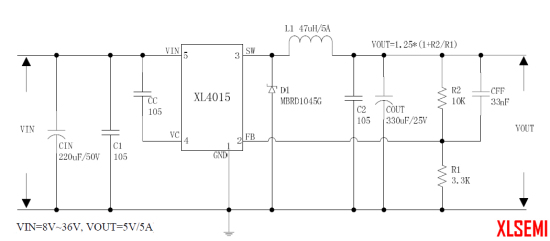
The rest of the electronics include one 78L05 fixed voltage regulator, one TL431 precision shunt regulator, and a LM358 operational amplifier. I haven’t seen the 78L05 chip in my module at first as it’s situated underneath the flat toroid-core inductor.
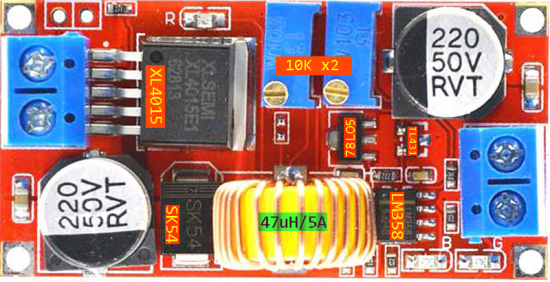
As you might guess correctly, the three ‘surplus’ chips are included in this revised XL4015 module for current control function. If you turned over the module, then you find a 0.05Ω (R050) current sensing resistor at the bottom of the PCB.
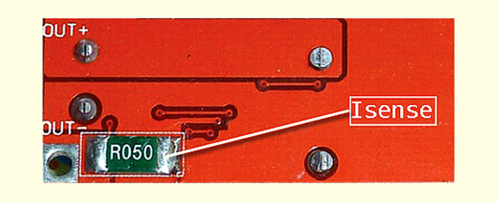
Next is the adopted schematic of the XL4015 CV/CC module. This is a very basic schematic as there is a myriad of befuddling replications and revisions – No surprise, simply a common Chinese business practice!
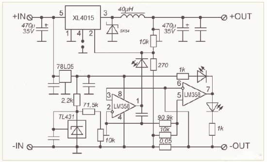
The overall design of the module is indeed a pretty neat and clever piece of work. Frankly, I was quite impressed by the unperplexed design idea of the LM358 based current control segment as this edition also includes a TL431 shunt regulator. In a previous version, I found that there was no TL431 chip onboard but the same regulated 5VDC (outputted by one LM317 chip) is used for the reference voltage as well (see next schematic snip). In principle, TL431/TS431 provides a reference that is more stable than the 78L05!
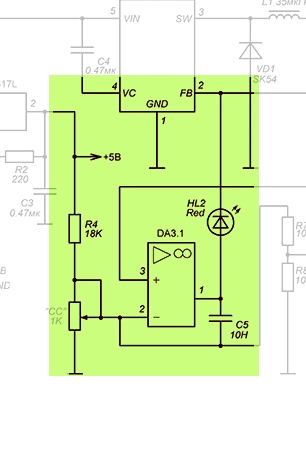
Anyhow it’s pointless to use this module unless you know how to run it properly. Let me show the (believed to be right) way suggested by my trusty overseas vendor. Just presume that you want to get 1A current at 9VDC output. Power up the module and connect a digital multimeter (dialed to proper dc voltage range) across the output connector, and adjust the V-ADJ trimpot to get 9.0VDC readout. Then, put the multimeter in proper current range, and adjust the I-ADJ trimpot to get 1.0A readout. Finally, remove the digital multimeter, wire the load, and run it. It’s worthy to notice that tuning of one trimpot might affect the setting of the other one slightly – not a big issue, let it be!
For the quick test, I used the module to drive one 10W white LED, through a 2A/12VDC lab power supply. Cool and simple!
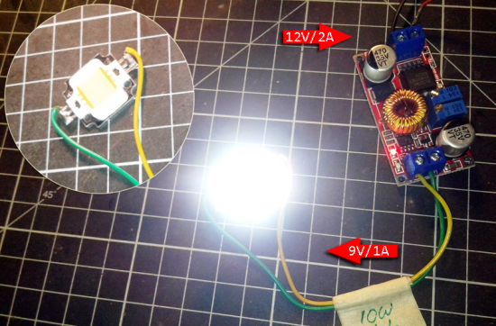
Everything has a tolerance. See the oscillogram taken while my DSO was probed at Pin 3 of XL4015. The switching frequency (Fosc) is about 190kHz. According to the datasheet, this lies in 144-216kHz range (180kHz typical). The output ripple is 18mV. Not bad at all!
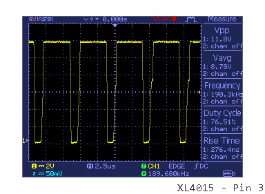
Concerning the TTL shutdown feature of XL4015, logic level shutdown function can be used in typical system application with a small signal diode or standard LED. When the TTL high voltage is above 3.3V(referenced to ground, lower than VIN), the converter will shut down, and when the TTL Low voltage below 0.8V(referenced to ground) will turn on the converter. As might be expected this feature is exploited smartly in the XL4015 non-isolated constant voltage and current module covered here.
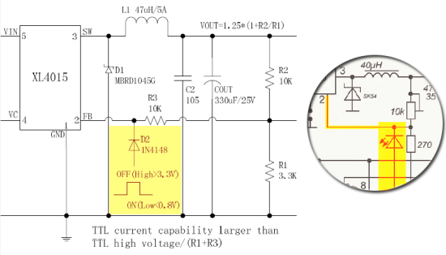
During my experiments I accidentally came across another similar (5A) XL4015 CV/CC module design with a slightly modified circuitry. See the two highlighted resistors in the below schematic.
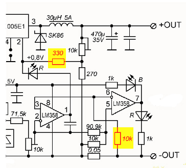
To conclude, without the user manual and exact schematic of the module we can only guess. However, I’m rather pleased with this module. It’s probably going to be best suited to hobby projects that demand a constant voltage or constant current where a bit of drift isn’t going to case troubles. Online storefronts are awash with these minuscule modules costing peanuts, and when they play as promised they’re incredibly useful to have around. I am a little concerned with the impressive claim that this module can also be used as a lithium-ion battery charger as I’m afraid if the input voltage is cut, the connected battery at the output discharges back through the electronics and might destroy it.
I tested the module under various input/output voltages and load conditions and evaluated its efficiencies. In the end, I opted to include the evaluation report in an upcoming blog post. Yes, I already tried one of these modules in a small solar-powered beacon light project. I haven’t had any problems so far. Now I’m documenting that do-it-yourself project, so you can see the article here within a couple of weeks.
Addendum – SEPIC Converter Module?
One annoying thing is that many sellers fallaciously described these XL4015 CV/CC buck converter modules as SEPIC converter modules. Look, in a single ended primary inductance converter (SEPIC), the output voltage can be higher or lower than the input voltage. Actually, a SEPIC converter module is a buck-boost dc-dc converter module based on SEPIC design topology which is a type of dc-dc conversion method allowing the electrical output potential (voltage) at the converter’s output to be greater than, less than, or equal to that at its input voltage. Below you can see the photograph of a quite popular (and cheap) SEPIC converter module.
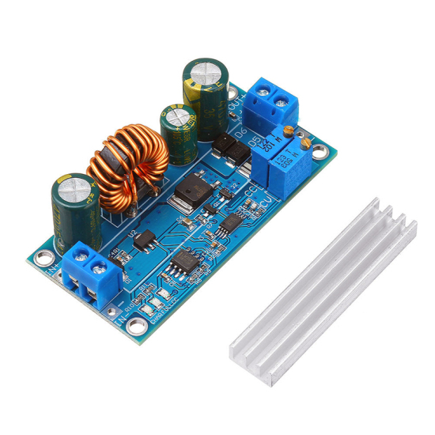
…
Related Web Links